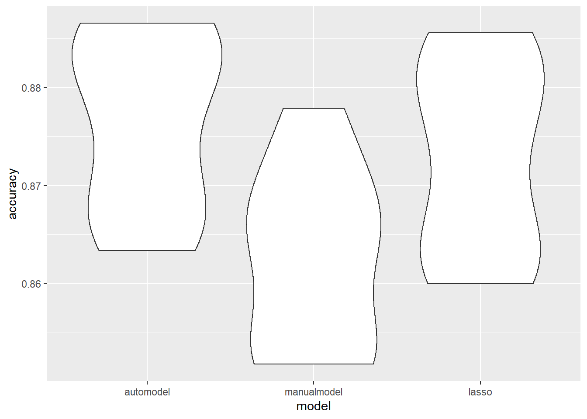

# Loading the cleaned data
load("./data/nyc_data.RData")
fill_NA = function(vector){
as.factor(coalesce(as.character(vector),"unknown"))
}
set.seed(8105)###Manual selection
The following code chunck define the functions that is gonna be used to generate and mapped on the cv dataframe, i.e. it build up the component of the pipeline.
###Function that do auto log reg
## function for cv
#crossv_mc(df,n)
## function for autologreg
log_reg_auto = function(cv_df,formular = manual_formular){
cv_df %>%mutate(
###Automodel selection with AIC as criterial
automodel = map(train, ~glm(current_vaping ~., data = .x, family = binomial(),na.action = na.exclude)%>%MASS::stepAIC(trace = FALSE))
) }
###Do lasso stat learning
lasso = function(cv_df){
lasso_temp = cv.glmnet(current_vaping ~., data = cv_df, family = "binomial")
glmnet(current_vaping ~., data = cv_df, family = "binomial",lambda = lasso_temp$lambda.min)
}
###find prediction accuracy
accy = function(model,data){
Temp = predict(model, data, type = "response")%>%round()
1-mean(Temp-(as.numeric(pull(as.tibble(data),current_vaping))-1))
}This part control the datas that was used to feed in the pipeline
# Extracting necessary variables
df = df_total%>%
select(
# binary respone
current_vaping,
# possible predictor
carring_weapon,
sad_hopeless,
attempted_suicide,
injurious_suicide_attempt,
safety_concerns_at_school,
threatened_at_school,
physical_fighting,
bullying_at_school,
bullying_electronically,
sex,
age,
race7,
<<<<<<< HEAD:Logistic-Regression.html
borough,
illegal_injected_drug_use,
sex_before_13,
multiple_sex_partner,
sexual_contact_2
,year)
df1517 = df%>%filter(year == 2015|year == 2017)%>%na.omit()
df15 = df%>%filter(year == 2017)%>%na.omit()
df17 = df%>%filter(year == 2015)%>%na.omit()The following part commbine all the component of the pipelines and feed the table.
###Set the manual selected predictor and response for the manual model
manual_formular = current_vaping ~ sad_hopeless + attempted_suicide + safety_concerns_at_school + threatened_at_school + physical_fighting + bullying_electronically + carring_weapon + year
### run the actual pipeline
regtb_1517=
## CV
crossv_mc(df1517,n=10)%>%
##stepAIC
log_reg_auto()%>%
## Manual model
mutate(manualmodel = map(train, ~glm(manual_formular, data = .x, family = binomial,na.action = na.exclude)))%>%
## Lasso model
mutate(lassomodel = map(train,~lasso(.x)))## Warning in (function (formula, data, weights = NULL, offset = NULL, subset
## = NULL, : input data was converted to data.frame## Warning in (function (formula, data, weights = NULL, offset = NULL, subset
## = NULL, : input data was converted to data.frame## Warning in (function (formula, data, weights = NULL, offset = NULL, subset
## = NULL, : input data was converted to data.frame## Warning in (function (formula, data, weights = NULL, offset = NULL, subset
## = NULL, : input data was converted to data.frame## Warning in (function (formula, data, weights = NULL, offset = NULL, subset
## = NULL, : input data was converted to data.frame## Warning in (function (formula, data, weights = NULL, offset = NULL, subset
## = NULL, : input data was converted to data.frame## Warning in (function (formula, data, weights = NULL, offset = NULL, subset
## = NULL, : input data was converted to data.frame## Warning in (function (formula, data, weights = NULL, offset = NULL, subset
## = NULL, : input data was converted to data.frame## Warning in (function (formula, data, weights = NULL, offset = NULL, subset
## = NULL, : input data was converted to data.frame## Warning in (function (formula, data, weights = NULL, offset = NULL, subset
## = NULL, : input data was converted to data.frame## Warning in (function (formula, data, weights = NULL, offset = NULL, subset
## = NULL, : input data was converted to data.frame## Warning in (function (formula, data, weights = NULL, offset = NULL, subset
## = NULL, : input data was converted to data.frame## Warning in (function (formula, data, weights = NULL, offset = NULL, subset
## = NULL, : input data was converted to data.frame## Warning in (function (formula, data, weights = NULL, offset = NULL, subset
## = NULL, : input data was converted to data.frame## Warning in (function (formula, data, weights = NULL, offset = NULL, subset
## = NULL, : input data was converted to data.frame## Warning in (function (formula, data, weights = NULL, offset = NULL, subset
## = NULL, : input data was converted to data.frame## Warning in (function (formula, data, weights = NULL, offset = NULL, subset
## = NULL, : input data was converted to data.frame## Warning in (function (formula, data, weights = NULL, offset = NULL, subset
## = NULL, : input data was converted to data.frame## Warning in (function (formula, data, weights = NULL, offset = NULL, subset
## = NULL, : input data was converted to data.frame## Warning in (function (formula, data, weights = NULL, offset = NULL, subset
## = NULL, : input data was converted to data.frame###Prediction Accuracy computation
regtb_1517=regtb_1517%>%
mutate(
accuracy_automodel= map2_dbl(.x = automodel,.y = test, ~accy(data =.y,model =.x)),
accuracy_manualmodel= map2_dbl(.x = manualmodel,.y = test, ~accy(data =.y,model =.x)),
accuracy_lasso= map2_dbl(.x = lassomodel,.y = test, ~accy(data =.y,model =.x))
)## Warning: `as.tibble()` is deprecated, use `as_tibble()` (but mind the new semantics).
## This warning is displayed once per session.## Warning in (function (formula, data, weights = NULL, offset = NULL, subset
## = NULL, : input data was converted to data.frame
## Warning in (function (formula, data, weights = NULL, offset = NULL, subset
## = NULL, : input data was converted to data.frame
## Warning in (function (formula, data, weights = NULL, offset = NULL, subset
## = NULL, : input data was converted to data.frame
## Warning in (function (formula, data, weights = NULL, offset = NULL, subset
## = NULL, : input data was converted to data.frame
## Warning in (function (formula, data, weights = NULL, offset = NULL, subset
## = NULL, : input data was converted to data.frame
## Warning in (function (formula, data, weights = NULL, offset = NULL, subset
## = NULL, : input data was converted to data.frame
## Warning in (function (formula, data, weights = NULL, offset = NULL, subset
## = NULL, : input data was converted to data.frame
## Warning in (function (formula, data, weights = NULL, offset = NULL, subset
## = NULL, : input data was converted to data.frame
## Warning in (function (formula, data, weights = NULL, offset = NULL, subset
## = NULL, : input data was converted to data.frame
## Warning in (function (formula, data, weights = NULL, offset = NULL, subset
## = NULL, : input data was converted to data.frame###Graph accuracy distribution
regtb_1517%>%select(starts_with("accuracy")) %>%
pivot_longer(
everything(),
names_to = "model",
values_to = "accuracy",
names_prefix = "accuracy_") %>%
mutate(model = fct_inorder(model)) %>%
ggplot(aes(x = model, y = accuracy)) + geom_violin()
###Finalize model retrived:
Final_1517=
## CV
tibble(train = list(df1517),
test = list(df1517))%>%
##stepAIC
log_reg_auto()%>%
## Manual model
mutate(manualmodel = map(train, ~glm(manual_formular, data = .x, family = binomial,na.action = na.exclude)))%>%
## Lasso model
mutate(lassomodel = map(train,~lasso(.x)))
Final_1517%>%
mutate(
accuracy_automodel= map2_dbl(.x = automodel,.y = test, ~accy(data =.y,model =.x)),
accuracy_manualmodel= map2_dbl(.x = manualmodel,.y = test, ~accy(data =.y,model =.x)),
accuracy_lasso= map2_dbl(.x = lassomodel,.y = test, ~accy(data =.y,model =.x))
)## # A tibble: 1 x 8
## train test automodel manualmodel lassomodel accuracy_automo…
## <lis> <lis> <list> <list> <list> <dbl>
## 1 <tib… <tib… <glm> <glm> <glmnt.fr> 0.876
## # … with 2 more variables: accuracy_manualmodel <dbl>,
## # accuracy_lasso <dbl>final_modle_formula = list(
Final_1517[[1,3]]$formula,
Final_1517[[1,4]]$formula,
Final_1517[[1,5]]$terms
)
final_modle_formula## [[1]]
## current_vaping ~ carring_weapon + sad_hopeless + attempted_suicide +
## safety_concerns_at_school + physical_fighting + bullying_at_school +
## bullying_electronically + sex + race7 + illegal_injected_drug_use +
## sexual_contact_2
## <environment: 0x7f87f9a0c768>
##
## [[2]]
## current_vaping ~ sad_hopeless + attempted_suicide + safety_concerns_at_school +
## threatened_at_school + physical_fighting + bullying_electronically +
## carring_weapon + year
##
## [[3]]
## ~carring_weapon + sad_hopeless + attempted_suicide + injurious_suicide_attempt +
## safety_concerns_at_school + threatened_at_school + physical_fighting +
## bullying_at_school + bullying_electronically + sex + age +
## race7 + borough + illegal_injected_drug_use + sex_before_13 +
## multiple_sex_partner + sexual_contact_2 + year accy(Final_1517[[1,5]],Final_1517[[1,1]])## [1] 0.8706405The incoperated log reg pipeline ends here
#Note that we could do the same procedure with the imputed data and see whether the prediction accuracy has been imporved.
#Also note that we could add more potential covariates into the model and see whether the prediction accuracy has been imporved.
#Compare with the original model ``{r} fit_logistic = glm(current_vaping ~ sad_hopeless + attempted_suicide + safety_concerns_at_school + threatened_at_school + physical_fighting + bullying_electronically + carring_weapon, data = data_tr, family = binomial())
fit_logistics_predict = round(predict(fit_logistic, data_te, type = “response”)) CrossTable(x = as.numeric(unlist(y_te))-1,y = fit_logistics_predict, prop.r = F, prop.c = F, prop.chisq = F) mean(as.numeric(unlist(y_te))-1 ==fit_logistics_predict)
| term | estimate | std.error | statistic | p.value | OR |
|---|---|---|---|---|---|
| (Intercept) | -1.192 | 0.172 | -6.915 | 0.000 | 0.304 |
| sad_hopelessNo | 0.278 | 0.073 | 3.823 | 0.000 | 1.321 |
| attempted_suicideNo | 0.526 | 0.104 | 5.036 | 0.000 | 1.692 |
| safety_concerns_at_schoolNo | 0.287 | 0.121 | 2.369 | 0.018 | 1.333 |
| threatened_at_schoolNo | 0.296 | 0.135 | 2.193 | 0.028 | 1.345 |
| physical_fightingNo | 0.773 | 0.075 | 10.347 | 0.000 | 2.165 |
| bullying_electronicallyNo | 0.302 | 0.094 | 3.228 | 0.001 | 1.353 |
| carring_weaponNo | 0.983 | 0.110 | 8.920 | 0.000 | 2.672 |
# What is the contribution of each predictor? see: https://uc-r.github.io/logistic_regression#multi
caret::varImp(fit_logistic)## Overall
## sad_hopelessNo 3.822561
## attempted_suicideNo 5.036263
## safety_concerns_at_schoolNo 2.368532
## threatened_at_schoolNo 2.193178
## physical_fightingNo 10.347481
## bullying_electronicallyNo 3.227808
## carring_weaponNo 8.920078# Pseudo R^2: see https://uc-r.github.io/logistic_regression#multi (Pseudo R^2 about 0.40 considered good)
pR2( glm(current_vaping ~ sad_hopeless + attempted_suicide + safety_concerns_at_school + threatened_at_school + physical_fighting + bullying_electronically + carring_weapon , data = df, family = binomial()) )["McFadden"]## McFadden
## 0.3345769# Cross-Validating the model
data_train <- trainControl(method = "cv", number = 5)
model_caret <- train(
current_vaping ~ sad_hopeless + attempted_suicide + safety_concerns_at_school + threatened_at_school + physical_fighting + bullying_electronically + carring_weapon,
data = df,
trControl = data_train,
method = 'glm',
family = binomial(),
na.action = na.pass)## Warning in nominalTrainWorkflow(x = x, y = y, wts = weights, info =
## trainInfo, : There were missing values in resampled performance measures.# Model predictions using 4 parts of the data for training
model_caret## Generalized Linear Model
##
## 10191 samples
## 7 predictor
## 2 classes: 'Yes', 'No'
##
## No pre-processing
## Resampling: Cross-Validated (5 fold)
## Summary of sample sizes: 9596, 8271, 8273, 8271, 8272, 8272, ...
## Resampling results:
##
## Accuracy Kappa
## 0.8471262 0.09581872AIC(fit_logistic)## [1] 5906.472